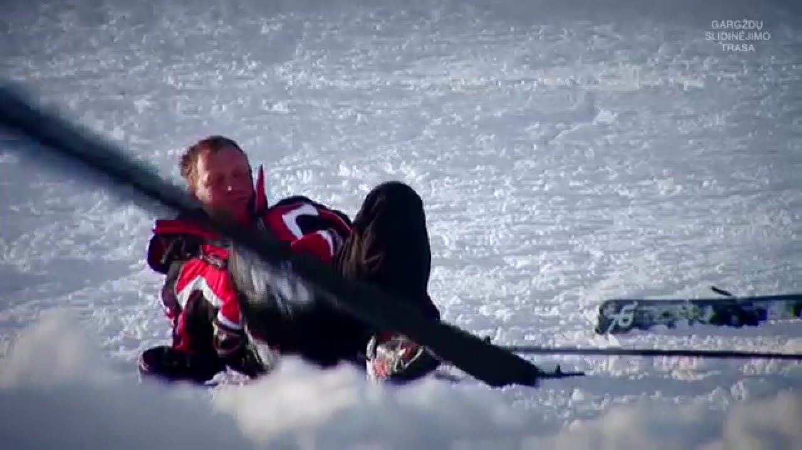
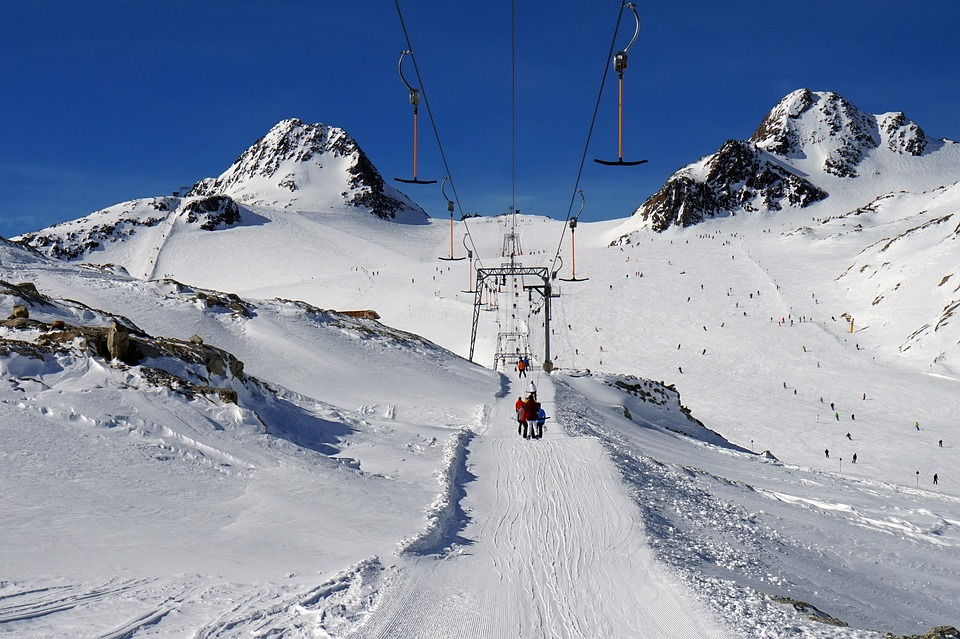
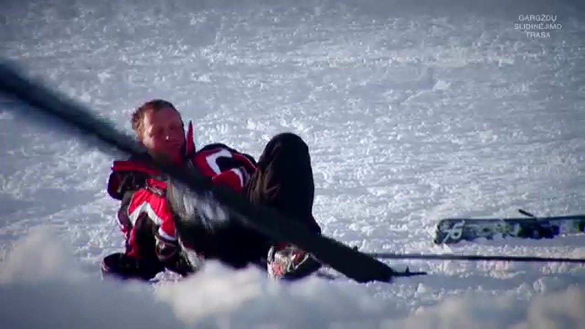
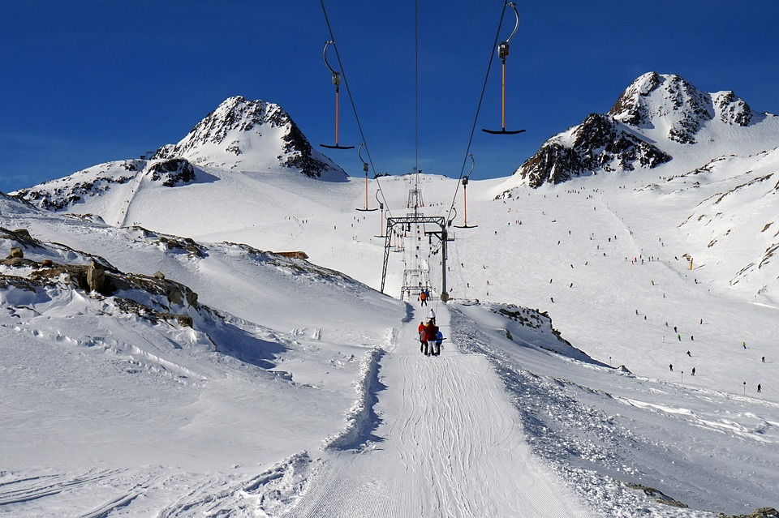

Lietuvos nacionalinė slidinėjimo asociacija | Lygumų slidinėjimas (XC)
2020.10.30 03:16
Lietuvos nacionalinė slidinėjimo asociacija
Lietuvos nacionalinė slidinėjimo asociacija
Menu
Skip to content Apie mus LNSA struktūra Naujienos Nariams Slidinėjimas Kalnų slidinėjimas Snieglenčių sportas Disciplinos Slidinėjimas Varžybų kalendorius 2020/2021 m. Praėjusių sezonų varžybų rezultatai Slidinėjimo rinktinės Taisyklės Kalnų slidinėjimas VARŽYBŲ KALENDORIUS 2020-2021 m. LNSA kalnų slidinėjimo sportininkų kodai. Rinktinės Taisyklės Snieglenčių sportas ir slidinėjimas laisvuoju stiliumi Varžybų kalendorius Rinktinės Taisyklės FIS kodų suteikimas Kontaktai Contact us in EnglishLygumų slidinėjimas (XC)
Istorija
Sporto šakos ištakos: lygumų slidinėjimo (toliau slidinėjimas) istorija siekia 5000 metų. Slidinėjimo kilmė siejama su Norvegija iš kur paplito po visą Skandinaviją ir Rusiją, kaip patikimas ir patogus būdas keliauti iš vienos vietos į kitą giliomis žiemomis.
Slidinėjimas yra originalus ir atsižvelgiant į dalyvių skaičių, viena iš skaitilngiausių šiaurinių („nordic“) sporto šakų, kurios vadinamos šiaurinėmis dėl kilmės geografine prasme, kadangi išsivystė šiaurinėje Europos dalyje, priešingai nei kalnų „alpine skiing “slidinėjimas, kurio kilmė siejama su Alpėmis.
Šiuolaikinėje visuomenėje slidinėjimas buvo daug populiaresnis nei jo pasekėjas iš Alpių (Alpine skiing/Kalnų slidinėjimas) ir Norvegija yra laikoma slidinėjimo, kaip sporto šakos gimtine. “Huseby“ lenktynės pirmą kartą oficialiai vykdytos dar 1879 m, o garsiosios Holmenkollen lenktynės 1892 metais. Šiaurės dvikovės renginiai, šuoliai slidėmis nuo tramplyno ir slidinėjimas buvo laikomas kaip viena sporto disciplina nuo 1900 m., šiais metais Holmenkolene pirmą kartą buvo surengtos atskiros 30 km. Slidinėjimo lenktynės.
Slidinėjimas šiandien
Vienos svarbiausių šių dienų varžybų yra FIS (tarptautinės slidinėjimo federacijos) Pasaulio taurės varžybos, kurios susideda iš 12 – 16 individualių lenktynių ir 6-8 komandinių (estafetės) varžybų. Apie 90 moterų ir 100 vyrų paprastai rungiasi šiose aukščiausio lygio varžybose. Be FIS Pasaulio taurės varžybų FIS WC (World cup) rengiamos ir kitos ne mažiau svarbios FIS varžybos – tai, Kontinentinės taurės, FIS kategorijos varžybos, Jaunimo čempionatai, ir nacionaliniai čempionatai, o taip pat ilgų distancijų masinės lenktynės įskaitant ir FIS maratonų taurę.
Ilgą laiką slidinėjimas buvo suprantamas kaip slydimas slidėmis klasikiniu būdu, kuomet slidininkas slysdavo išanksto parengta specialia trasa, kur abi slidės slysdavo vėžėmis. Slidininkai naudodavo tiek slydimą gerinačius parafinus, tiek sukibimą gerinančius tepalus, kurie buvo naudojami, ištepant slidės slystamąją dalį. Sukibimą gerinantys tepalai (kick wax) buvo naudojami palengvinti slidininko judėjimą į kalną, o slydimą gerinantys parafinai (glide wax), padėdavo greičiau įveikti nuokalnes ir lengviau slysti lygumomis ar nesmarkiai raižytomis vietovėmis.
1982 Pasaulio taurės sezono metu – pirmas oficialus pasaulio taurės sezonas – kuriame Bill Koch, sportininkas iš Jungtinių Amerikos valstijų išpopuliarino čiuožėjo( „skaiting“) arba, kitaip vadinamą laisvuąjį stilių („freestyle“). Čiuožėjo stilius anksčiau buvo naudojamas daugiausia tik ilgų distancijų slidininkų, daugumoje skandinavijoje, kuomet viena slidininko slidė slysdavo vėže, o kita koja sportininkas spirdavosi spausdamas slidę ne atgal kaip įprasta klasikiniu stiliumi, o į šalį tam, kad didinti slydimo greitį. Staiga čiuožėjo stilius, kuris buvo greitesnis nei klasikinis slydimo būdas, evoliucionavo į šiuolaikinę slydimo laisvu stiliumi techniką, kai slidininkai slysta trasa be vėžių (išskyrus, kai vėžės įrengiamos, tam, kad padėtų įveikti staigius posūkius nuokalnėse arba estafetės perdavimo zonose).
Varžybos
FIS Pasaulio taurė, FIS Pasaulio čempionatas ir Žiemos Olimpinės Žaidynės – tai varžybos, kuriose sportininkai varžosi dvylikoje skirtingų rungčių. Moterys varžosi sprinto, komandinio sprinto, 10 km., 15 km. persekiojimo lenktynėse, 30 km. masinio starto ir 4x5km. estafečių lenktynėse. Vyrai varžosi sprinto, komandinio sprinto, 15km., 30 km. persekiojimo lenktynėse, 50 km. masinio starto ir 4x10km. Estafečių lenktynėse, taip pat įvairios distancijos naudojamos kituose tarptautiniuose renginiuose, kontinentinėse taurėse, FIS varžybose, jaunimo ir nacionalinio lygio varžybose.
Masinis startas (bendras startas)
Sportininkai startuoja vienu metu, išsirikiavę eilėmis. Sportininkas, pirmas kirtęs finišo liniją, laimi varžybas.
Atskiro starto lenktynės
Sportininkai startuoja intervalu vienas po kito kas 15 sek. arba 30 sek., priklausomai nuo varžybų. Nugali sportininkas, greičiausiai įveikęs distanciją.
Estafetės
Komanda sudaroma iš keturių sportininkų, kiekvienas iš jų turi įveikti vieną varžybų etapą ir perduoti estafetę savo komandos draugui. Estafetė pradedama bendru pirmojo etapo dalyvių startu.
Sprinto varžybos
Sprinto varžybos pradedamos atskiro staro lenktynėmis su 15 sek. Intervalais, pirmi 30 greičiausių sportininkų patenka į atkrentamasias varžybas, kuriose sportininkai suskirstomi į pogrupius. Pirmi du ketvirtfinalio sportininkai patenka į pusfinalio pogrupius, kuriuose vykdomi du slydimai (preliminariniai etapai) po 4 sportininkus kiekviename. Finaliniame slydime startuoja 4 sportininkai po du iš kiekvieno pusfinalio.
Komandinio sprinto varžybos
Komadinio sprinto varžybos susideda iš pusfinalių ir finalinių etapų. Pusfinaliuose yra po 10 ar daugiau komandų, susidedančių iš diejų sportininkų (A ir B), kurie perduoda vienas kitam estafetę tris kartus (A,B,A,B,A,B). Pirmos penkios slydimo komandos patenka į finalą.
Persekiojimas
Persekiojimo varžybos vykdomos bendro starto principu ir vykdomis abiem slydimo technikos būdais, tarpinio sustojimo metu, įveikus pusę distancijos, stadione sportininaki pakeičia įrangą iš klasikinio stiliaus į laisvo stiliaus ir tęsia varžybas iki finišo, nugali sportininkas, pirmas kirtęs finišo liniją.
Vykdomos varžybos
FIS Pasaulio taurės varžybose, FIS Pasaulio čempionatuose ir Žiemos Olimpinėse Žaidynėse, vykdomos šių distancijų varžybos, kitų distancijų varžybos vykdomos, kontinentinių čempionatų, FIS varžybų, jaunimo ir nacionaliniuose čempionatuose:
Rungtis Lytis Slydimo technika * Startas 10 km Moterys klasikinis startas kas 30 sek. Persekiojimas 15 km. (7,5 km. + 7,5 km.) Moterys Klasikinis/laisvas Bendras sartas Sprintas Moterys laisvas Startas kas 15 sek./bendras startas Komandinis sprintas Moterys klasikinis Bendras startas 30 km. Lenktynės Moterys laisvas Bendras startas Estafetė 4×5 km. Moterys Klasikinis/laisvas Bendras startas 15 km Vyrai klasikinis startas kas 30 sek. Persekiojimas 30 km. (15km. + 15 km.) Vyrai Klasikinis/laisvas Bendras sartas Sprintas Vyrai laisvas Startas kas 15 sek./bendras startas Komandinis sprintas Vyrai klasikinis Bendras startas 50 km. Lenktynės Vyrai laisvas Bendras startas Estafetė 4×10 km. Vyrai Klasikinis/laisvas Bendras startas* atskirų slydimo technikų varžybos: Moterų sprintas, komadinis sprintas, 10 km., ir 30 km. taip pat vyrų sprintas, komandinis sprintas, 15 km. ir 50 km. Vykdomas pakaitom, per FIS Pasaulio čempionatus ir Žiemos Olimpines Žaidynes (pvz. Žiemos Olimpinėse Žaidynėse 50 km. Lenktynės vykdomos klasikiniu stiliumi, o jau sekančiose bus vykdomos laisvuoju stiliumi).
Taisyklės ir procedūros:
Trasos
Skirtingose distancijose, laikantis FIS patvirtinų slidinėjimo taisyklių, distancijose privalo būti atitinkamas skaičius pakilimų, nusileidimų ir kitų trasos techninių elementų, kurie padidina varžybų sudėtingumą ir įdomumą.
Vėžės
Slidinėjimo vėžės turi būti nuo 4 iki 9 metrų pločio, klasikinio stiliaus varžyboms, vėžė turi būti paruošta su minimum viena vėže, skirta slysti klasikiniu slydimo būdu (dvi paralėlės išpjautos vėžės) idealia linija.
Slydimo technikos
Slidinėjimo lenktynėse, skiriamos dvi slydimo technikos. Klaiskinis slydimo būdas, kuriam slidės paruošiamos su sukibimą gerinančiais tepalais, leidžiančiais slidininkui judėti trąsoje diagonaliai arba kitaip klasikiniu slydimo būdu, tam parengtose vėžėse. Laisvo stiliaus slydimo technika, kuriai slidės ruošiamos naudojant tik slydimą gerinančius parafinus ir kitas medžiagas (greitintuvai, siera ir kt.), leidžiančias sportininkui naudojant atsipyrimą slidžių kraštais (kantais) didinti slydimo greitį, kitaip vadinamą „čiuožėjo“ stilių. Sportininkai, įveikdami distanciją abiem technikom, naudojasi lazdomis.
Starto tvarka
Varžybose, kur sportininkai startuoja nuosekliai su laiko intervalais, starto tvarka nustatoma burtų keliu, paskirstant sportininkus į keturias starto grupes. Pajėgiausios grupės, kitaip vadinamos „raudonaja grupe“ grupės numeris, nusprendžiamas, komandos vadovų pasitarime, atsižvelgiant į aktualias orų prognozes. Taip užtikrinamos teisingos ir optimalios sąlygos varžytis geriausiems sportininkams, teisėjų kolegija turi teisę nuamtyti ir penktąją sportininkų grupę jei to reikia atsižvelgiant į dalyvių skaičių. Masinio starto lenktynėse, sportininkai startuoja vienu metu, sportininkai išrikiuojami į eiles atsižvelgiant į prieš tai buvusių startų rezultatus, geriausi statomi priekyje. Komandinio sprinto lenktynėse sportininaki startuoja dviem eilėmis atsižvelgiant į abiejų komados narių FIS taškų sumą. Estafetės starto pozicijos yra nustatomos atsižvelgiant į FIS pasaulio taurės nacijų taurės taškus, o Pasaulio čempionatų ir Olimpinių žaidynių metu ar kitų stambių renginių metu, estafečių komandų starto tvarka nustatoma, atsižvelgiant į prieš tai buvusių to rango varžybų rezultatus. (FIS Pasaulio Čempionto arba Žiemos Olimpinių Žaidynių).
Paraiškos estafetėms
Estafečių varžyboms, komandų vadovai gali užregistruoti iki 6 sportininkų, galutinė komandos dalyvių sudėtis ir komandos narių starto tvarka turi būti pateikta, ne vėliau kaip likus dviems valandoms iki varžybų starto.
Lygus rezultatas
Atskiro starto lenktynėse, lygus rezultatas tarp dviejų ir daugiau sportininkų laikomas galimu ir nurodomas finišo protokole, rezultatai fiksuojami šimtųjų sekundės dalių tikslumu. Masinio starto, sprintų ir estafečių varžybose, nugalėtojų nustatymui pasitelkiamas foto finišas, nugalėtojas nustatomas, pagal sportininko priekinės kojos pėdos priekio kertančio finišo liniją dalį. Jei foto finišo pagalba negalima nustatyti, kuris sportininkas pirmas kirto finišo liniją, jų rezultatas laikomas lygiu.
Lenkimas ratu
Sportininkas ar komanda, masinio starto lenktynėse, turi nutraukti varžybas jei yra aplenkiami vienu varžybų ratu, tačiau jų rezultatas bus fiksuojamas varžybų protokole atsižvelgiant į jų užimamą vietą iki aplenkimo.
Diskvalifikacija
Sportininkas dikvalifikuojamas, jei klasikinio stiliaus varžybų metu – naudoja laisvą (čiuožėjo) slydimo stilių, arba kitaip tyčia trukdo kitiems varžybų dalyviams. Su visomis slidinėjimo taisyklėmis galite susipažinti:
http://www.fis-ski.com/uk/disciplines/cross-country-rules/cross-country-rules/rules.html
Įranga:
Apkaustai
Apkaustai skirti tik pritvirtinti sportininko bato priekį prie slidės.
Batai
Slidinėjimo batai panašūs į bėgimo ar kitus sportinius batelius, batai skirti laisvo stiliaus (čiuožėjo) technikai yra standesni ir turi didesnę pėdos sąnario fiksaciją, negu batai skirti klasikiniam stiliui.
Lazdos
Klasikiniai slydimo technikai, lazdos paprastai turėtų būti iki pažastų, o lazdų kaušeliai turėtų užtikrinti tinkamą atsipyrimą nuo trasos. Laisvojo stiliaus slydimo technikai (čiuožėjo) lazdos paprasai būna ilgesnės ir kietesnės, jų ilgis siekia sportininko smakrą ar burną, lazdų kaušeliai parastai būna panašūs ar identiški į klasikinio stiliaus lazdų kaušelius.
Slidės
Slidės naudojamos slidinėjimo lenktynėse yra gerokai lengvesnės ir siauresnės nei kalnų slidinėjime, ir turi ilgas, riestas viršūnes, minimalus slidžių ilgis klasikinio stiliaus lenktynėms turi būti ne trumpesnis kaip 10 cm už sportininkų ūgį, tuo tarpu laisvojo stiliaus (čiuožėjo) slidžių ilgis yra tarp 170 cm iki 200 cm. Laisvojo stiliaus slidžių viršūnės yra labiau išlinkę.
Parafinai/tepalai
Parafinai/tepalai kuriuos pasirenka sportininkai paprastai ir yra esminis skirtumas tarp laimėjimo ir pralaimėjimo, tinkamas parafinų/tepalų parinkimas priklauso nuo sniego ir oro sąlygų. Skiriami du tipai parafinų/tepalų (wax) tai „glide wax“ – parafinai, skirti mažinti slidės slystamojo paviršiaus ir sniego sukibimą, taip leidžiantys pasiekti didesnį greitį ir „kick wax“ – tepalai, skirti padidinti slidės vidurinės dalies, vadinamos kaladėle sukibimą su sniegu, paprastai tik sportininko atsispyrimo metu tepalas veikia maksimaliai, taip leisdamas jam atlikti techiškai tikslų atsispyrimą koja.
Slidininko apranga
Paprastai naudojama tampri medžiaga apgaubianti sportininko kūną, tam kad sumažinti sportininko kūno pasipriešinimą vėjui. Storos vilnonės kojinės jau nebe madingos! Trumpas žodynėlis:
Klasikinė slydimo technika – tai tradicinė slidinėjimo technika, kuomet sportinikai distanciją įveikia slysdami, kuomet abi sportininko kojos trasoje juda paraleliai viena kitos atžvilgiu.
Laisvo stiliaus (čiuožėjo) slydimo technika – slydimo technika išsivysčiusi 1970 – tais, primena greitojo čiuožimo sportininkų techniką, atsispyrimo metu sportinikas vienos slidės vidine dalimi (kantu) spiriasi atgal į šalį, maždaug 45 laipsnių kampu, parastai žiuožėjo technika yra greitesnė nei klasikinė slydimo technika.
Parafinai – tai medžiagos skirtos mažinti slidės slystamojo paviršiaus ir sniego trintį, šie parafinai naudojami padengti visą slidės slystąmąjį paviršių, skirtą laisvajam stiliui (čiuožėjo) ir tik priekiniai ir galinei slidės daliai, slystant klasikiniu stiliumi.
Tepalai – tai medžiagos skirtos padidinti slidės slystamojo paviršiaus ir sniego trinčiai, ir tepalai parastai dedami tik vidurinėje slidės (skirtos klasikiniam slydimo būdui) dalyje, kaladėlėje. Masinis startas – tai sportinikų starto tvarka, kuomet visi varžybose dalyvaujantys sportinikai startuoja vienu metu, laimi sportininkas pirmas kirtęs finišo liniją.
Persekiojimas
Persekiojimo varžybos vykdomos bendro starto principu ir vykdomis abiem slydimo technikos būdais, tarpinio sustojimo metu, įveikus pusę distancijos, stadione sportininaki pakeičia įrangą iš klasikinio stiliaus į laisvo stiliaus ir tęsia varžybas iki finišo, nugali sportininkas, pirmas kirtęs finišo liniją.
Grumtynių etapas – paprastai taip vadinamas pirmas estafetės etapas, kurio metu sportinikai neišvengia fizinio kontakto, bandydami išsikovoti kuo geresnę poziciją.
Atskiras startas – tai sportininkų starto tvarka, startuojant nuosekliais tam tikrais laiko intervalais (kas 15 sek. Ir 30 sek.). laimi sportinikas greičiausiai įveikęs distanciją.
Vertikali (stati) įkalnė
Tai kopimas į labai stačią ir ilgą įkalnę,kalvą,kalną. Paskutiniame „Tour de ski“ FIS Pasaulio Taurės varžybų etape,finišas jau tradiciškai vykdomas slystant į Vertikalią įkalnę, naudojant Kalnų slidinėjimo trasą.
Vertimas iš FIS Copyright (c) Tarptautinė Slidinėjimo Federacija(FIS)Sekite naujienas Facebook’e
Partneriai
Proudly powered by WordPress | Theme RCG Forest- slidinėjimas | Mindaugo blogas
- Slidinėjimas - Blogger
- Slidinėjimo akademija
- Lygumų slidinėjimas (XC)
- Lėktuvu Archives - Slidinėjimas
- kalnumagija - Kalnų slidinėjimo blogas
- Lietuvos nacionalinė slidinėjimo asociacija
- Slidinėjimo kelionės
- slidinėjimas
- Slidinėjimas | Slidinėjimo kelionės | Slidinėjimo kurortai ...
- slidinėjimas | Mindaugo blogas
Iš pradžių tai buvo tik idėja tapti juridiniu vienetu, kad būtų galima oficialiai prašyti paramos, nes kalnų slidinėjimas lietuviams –… Į Pjongčangą – perrašyti istorijos 17. lapkričio 2017
- Slidinėjimas - Blogger
Slidinėjimas. Tik geriausi pasiūlymai slidinėjimo kelionėms į Austriją, Italiją, Slovakiją, Prancūziją ir kt. šalis vykstant autobusu, lėktuvu, savo ...
- Slidinėjimo akademija
Slidinėjimo kelionės - apsilankykite ir išsirinkite šalį, kelionės datą, bei pasinerkite į nepaprastą nuotykį. Visi išvykimai garantuoti!
- Lygumų slidinėjimas (XC)
Slidinėjimas yra originalus ir atsižvelgiant į dalyvių skaičių, viena iš skaitilngiausių šiaurinių („nordic“) sporto šakų, kurios vadinamos šiaurinėmis dėl kilmės geografine prasme, kadangi išsivystė šiaurinėje Europos dalyje, priešingai nei kalnų „alpine skiing “slidinėjimas, kurio kilmė siejama su Alpėmis.
- Lėktuvu Archives - Slidinėjimas
Slidinėjimo Akademijoje apsilankė ypatingas svečias - Lietuvos Respublikos Prezidentė. Ji ne tik domėjosi, kaip mums sekasi, stebėjo slidinėjančius klientus, bet ir susidomėjusi klausėsi apie vienintelę tokią sporto ir laisvalaikio erdvę ne tik Lietuvoje, bet ir visose Baltijos šalyse, kasdien sutraukiančią šimtus žiemos sporto gerbėjų.
- kalnumagija - Kalnų slidinėjimo blogas
Slidinėjimas 250 kilometrų trasų turinčiame Serre Chevalier yra tarsi kelionė: nuo neįprastai aukštai čia augančių medžių vainikų leisdamiesi žemyn jausitės, lyg čiuožtumėte per skirtingas šalis ir kraštovaizdžius.
- Lietuvos nacionalinė slidinėjimo asociacija
Slidinėjimas ir čiuožimas snieglente yra nesuvaržytos sporto šakos, kur kiekvienas gali judėti kur ir kaip tik nori, su sąlyga, kad jie laikysis taisyklių ir čiuoš atsižvelgdami į savo asmeninius gebėjimus ir kalnuose vyraujančią padėtį. Slidininkas ar snieglenintininkas priešakyje turi pirmumo teisę.
- Slidinėjimo kelionės
slidinėjimas Lyguminių slidžių video žiemai/vasarai. June 6, 2014 June 6, 2014 karalius Laisvalaikis/Hobbies laisvalaikis, slidinėjimas, vasara, žiema. Labai paprastas, bet tuo pačiu daug parodantis apie techniką ir slidinėjimo būdus žiemą vasarą su lyguminėmis slidėmis. Vilniuje jau taip pat atsiranda vienas kitas “vasarinis ...
- slidinėjimas
slidinėjimas statusas T sritis Kūno kultūra ir sportas apibrėžtis Kai kurių žiemos sporto šakų (biatlono, slidinėjimo dvikovės) varžybų sudedamoji dalis.atitikmenys: angl. skiing vok. Skisport, m rus. лыжный спортrus. лыжный спорт
- Slidinėjimas | Slidinėjimo kelionės | Slidinėjimo kurortai ...
Slidinėjimas Ötztal Pagrindiniai slidinėjimo kurortai : Obergurgl-Hochgurgl trasų 112 km, mėlynų 60 km, raudonų 33 km, juodų 14 km, aukščiai 1800 - 3030 m virš jūros lygio. Sölden trasų 146 km, mė...
Iš pradžių tai buvo tik idėja tapti juridiniu vienetu, kad būtų galima oficialiai prašyti paramos, nes kalnų slidinėjimas lietuviams –… Į Pjongčangą – perrašyti istorijos 17. lapkričio 2017
Slidinėjimas. Tik geriausi pasiūlymai slidinėjimo kelionėms į Austriją, Italiją, Slovakiją, Prancūziją ir kt. šalis vykstant autobusu, lėktuvu, savo ...
Slidinėjimo kelionės - apsilankykite ir išsirinkite šalį, kelionės datą, bei pasinerkite į nepaprastą nuotykį. Visi išvykimai garantuoti!
Slidinėjimas yra originalus ir atsižvelgiant į dalyvių skaičių, viena iš skaitilngiausių šiaurinių („nordic“) sporto šakų, kurios vadinamos šiaurinėmis dėl kilmės geografine prasme, kadangi išsivystė šiaurinėje Europos dalyje, priešingai nei kalnų „alpine skiing “slidinėjimas, kurio kilmė siejama su Alpėmis.
Slidinėjimo Akademijoje apsilankė ypatingas svečias - Lietuvos Respublikos Prezidentė. Ji ne tik domėjosi, kaip mums sekasi, stebėjo slidinėjančius klientus, bet ir susidomėjusi klausėsi apie vienintelę tokią sporto ir laisvalaikio erdvę ne tik Lietuvoje, bet ir visose Baltijos šalyse, kasdien sutraukiančią šimtus žiemos sporto gerbėjų.
Slidinėjimas 250 kilometrų trasų turinčiame Serre Chevalier yra tarsi kelionė: nuo neįprastai aukštai čia augančių medžių vainikų leisdamiesi žemyn jausitės, lyg čiuožtumėte per skirtingas šalis ir kraštovaizdžius.
Slidinėjimas ir čiuožimas snieglente yra nesuvaržytos sporto šakos, kur kiekvienas gali judėti kur ir kaip tik nori, su sąlyga, kad jie laikysis taisyklių ir čiuoš atsižvelgdami į savo asmeninius gebėjimus ir kalnuose vyraujančią padėtį. Slidininkas ar snieglenintininkas priešakyje turi pirmumo teisę.
slidinėjimas Lyguminių slidžių video žiemai/vasarai. June 6, 2014 June 6, 2014 karalius Laisvalaikis/Hobbies laisvalaikis, slidinėjimas, vasara, žiema. Labai paprastas, bet tuo pačiu daug parodantis apie techniką ir slidinėjimo būdus žiemą vasarą su lyguminėmis slidėmis. Vilniuje jau taip pat atsiranda vienas kitas “vasarinis ...
slidinėjimas statusas T sritis Kūno kultūra ir sportas apibrėžtis Kai kurių žiemos sporto šakų (biatlono, slidinėjimo dvikovės) varžybų sudedamoji dalis.atitikmenys: angl. skiing vok. Skisport, m rus. лыжный спортrus. лыжный спорт
Slidinėjimas Ötztal Pagrindiniai slidinėjimo kurortai : Obergurgl-Hochgurgl trasų 112 km, mėlynų 60 km, raudonų 33 km, juodų 14 km, aukščiai 1800 - 3030 m virš jūros lygio. Sölden trasų 146 km, mė...
 


